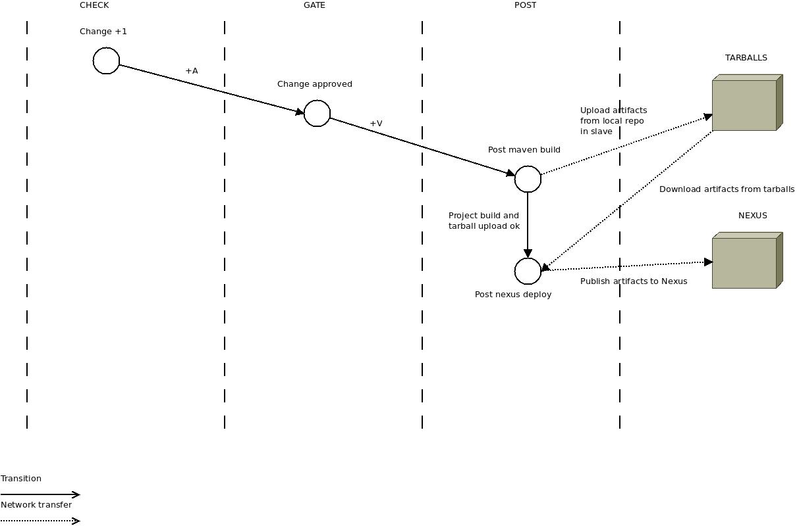

- job-template:
name: 'post-{name}-maven-build'
node: '{node}'
tarball-site: '{tarball-site}'
wrappers:
- timeout:
timeout: 60
fail: true
- timestamps
builders:
- gerrit-git-prep
- maven-properties
- inject:
properties-file: maven.properties
- maven-target:
maven-version: Maven3
pom: pom.xml
goals: 'clean deploy'
settings: m2/settings.xml
properties:
- project-version=${{PROJECT_VER}}
- altDeploymentRepository=snapshots::default::file:///${{WORKSPACE}}/local-deploy
- skipTests=true
publishers:
- console-log
- scp:
site: '{tarball-site}'
files:
- target: 'ci/{name}/${{PROJECT_VER}}/'
source: 'local-deploy/**'
keep-hierarchy: true
copy-after-failure: false
- job-template:
name: 'post-{name}-nexus-deploy'
node: privileged-slave
tarball-site: '{tarball-site}'
maven-repo-id: '{maven-repo-id}'
maven-repo-url: '{maven-repo-url}'
wrappers:
- timeout:
timeout: 60
fail: true
- timestamps
builders:
- shell: |
#!/bin/bash -xe
/usr/local/jenkins/slave_scripts/gerrit-git-prep.sh https://review.test.net https://git.ci.test.net
- maven-properties
- inject:
properties-file: maven.properties
- shell: |
#!/bin/bash -xe
wget -r -l 0 -I ci/{name}/${{PROJECT_VER}} \
-R index.html*,${{PROJECT_VER}} \
-nH -np --cut-dirs=3 \
{tarball-site}/ci/{name}/${{PROJECT_VER}}/
for ARTIFACT_FILE_PATH in $(find local-deploy/ -type f ! \( -name "*.md5" -o -name "*.sha1" -o -name maven-metadata.xml \)); do
ARTIFACT_PACKAGE_PATH=$(echo $ARTIFACT_FILE_PATH | sed 's#local-deploy/##')
curl -K ~/.nexus-creds -T $ARTIFACT_FILE_PATH {maven-repo-url}/"$ARTIFACT_PACKAGE_PATH"
done
NEXUS_REPO_METADATA_URL=$(echo "{maven-repo-url}" | sed 's#content#service/local/metadata#')"/content"
curl -X DELETE -K ~/.nexus-creds $NEXUS_REPO_METADATA_URL
publishers:
- console-log
Please contribute to Openstack CI and remember, Openstack CI is not just for Openstack or Python projects, it can be used for ANY project!
These slides available at: https://github.com/rcarrillocruz/paris-summit-talk/tree/paris-talk
Upstream change in review for this work at: https://review.openstack.org/#/c/125011/
Contact details:
Work: ricardo.carrillo.cruz@hp.com
Personal: ricardo.carrillo.cruz@gmail.com
Twitter: https://twitter.com/rcarrillocruz
IRC handle: rcarrillocruz